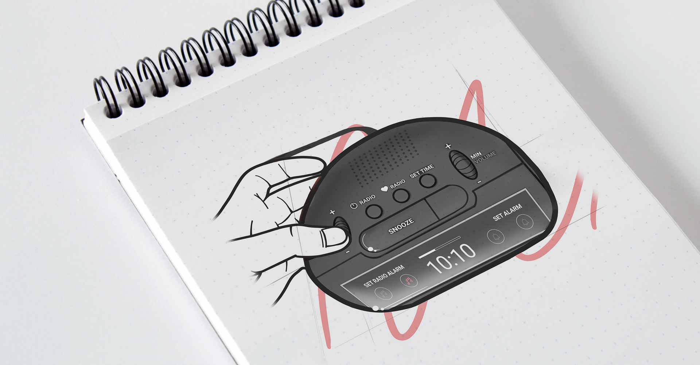

Proposition d’une nouvelle version du réveil Brandt BCR173 qui répond davantage aux critères ergonomiques. Ceux-ci ne sont pas seulement anthropomorphiques mais prennent en compte toutes les parties de l’usage de l’objet dont l’expérience utilisateur.

Applications des différentes étapes d'une analyse ergonomique. Celle-ci repose en grande partie sur l’observation de l’usage. Elle est donc très concrète et nécessite de rassembler des utilisateurs, selon des profils définis. On peut dès lors avoir une image plus précise de l’usage réel et le comparer à l’usage prescrit du concepteur. Il faut être prudent vis-à-vis des facteurs de variabilité : jour/nuit, âge, langue, etc.

La démarche ergonomique permet au concepteur de mieux comprendre l’usage de son produit. Une nouvelle proposition de produit plus agréable et efficace qui s’appuie sur l’expérience est alors possible.
Nous avons conçu pour le réveil une nouvelle navigation, une réorganisation de l’interface et un nouveau design.
